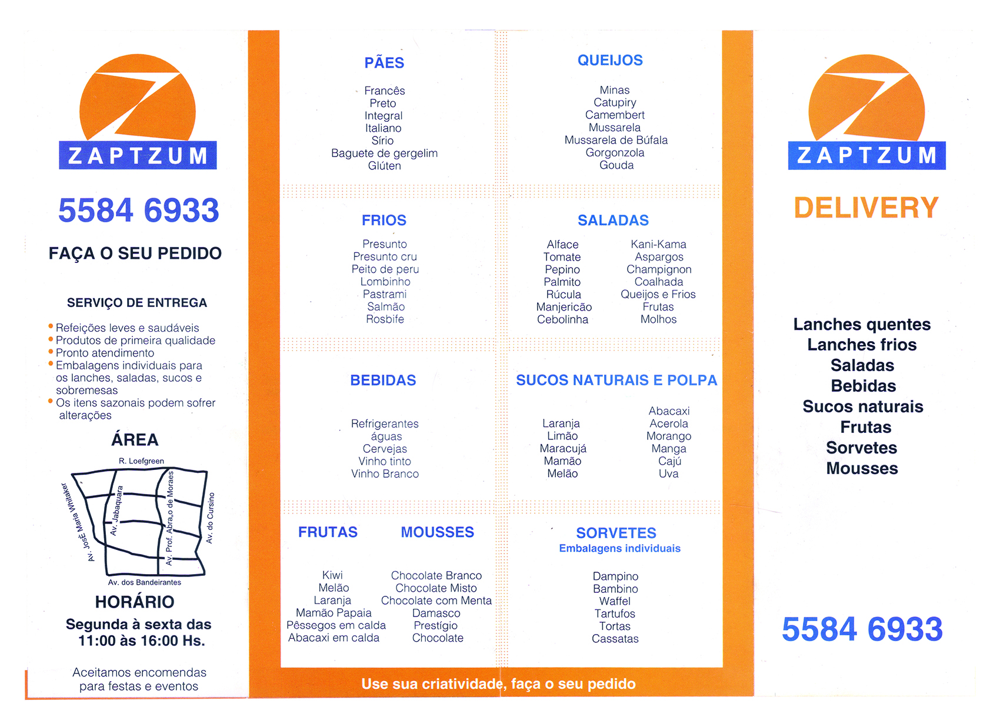
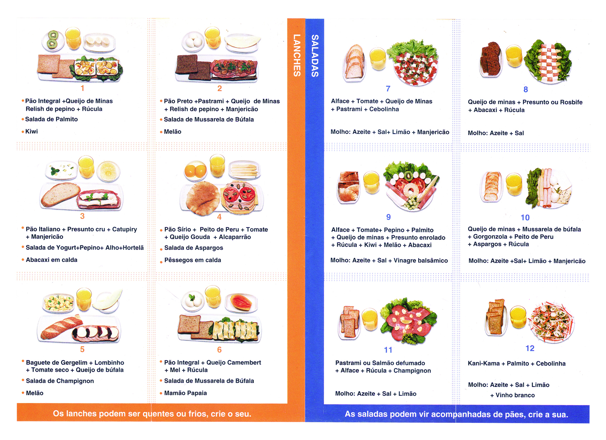

Zaptzum
This is a brand that I helped create in early high school, drawing the shape of the circumscribed 'Z', accompanied by a rectangle with the name. It was created to represent a snack delivery company. Here are some of the visual communications with the brand application:
Front of the colored folder, with 3 folds in accordion and printed in glossy couch of 150 grams.
Back of the colored folder

Two-sided monochrome folder, with one fold in half and printed on 200g recycled paper.
At the time I drew several sketches of the brand, which already had a name thought and my mother Ariane Cole finalized the arts in Corel Draw, including choosing the colors. The company was created by my father Artur Cole, to deliver healthy and light snacks in the neighborhood of the "Bosque da Saúde" - "Forest of Health" (an interesting coincidecidence). The main menu was the snacks and salads; which contained or accompanied various types of: breads, cheeses, cold cuts, salads, mousses, ice creams, beverages and juices both natural and pulp. It was the first brand I helped create.